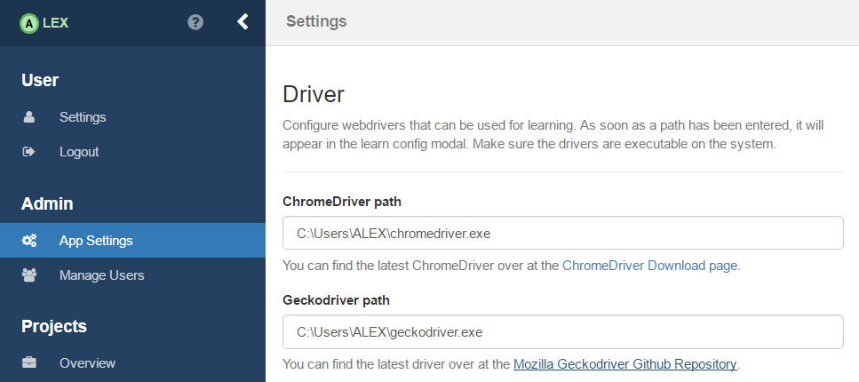
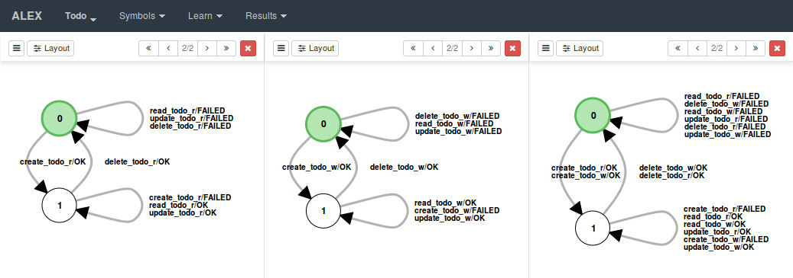
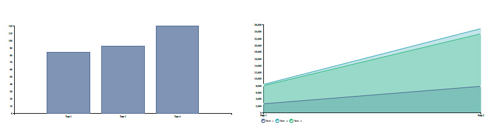

User Manual
Here we present a detailed explanation of the concepts and ways to use ALEX. If you find bugs of any kind relating this application or inaccuracies in this manual, let us know.
Description and Features
ALEX offers a simplicity-oriented way to model and execute learning experiments for web applications and web services using active automata learning. Based on the function set of the LearnLib and inspired by the LearnLib Studio the application lays a focus on the ease to use of the tool while offering an extensive feature set:
- Inferring Mealy machines of web applications and web services using active automata learning techniques
- Support for managing and learning multiple applications
- Graphical symbol construction
- Graphical learn process modelling
- Automatic generation and visualization of
- Hypotheses
- Internal data structures (Observation table and Discrimination tree)
- Statistics regarding learn results
- Simultaneous learning of web applications and web services
- Algorithms: L*, TTT, Discrimination Tree, DHC, Kearns & Vazirani
- Equivalence oracles: Random Word, Complete, Sample, W-Method, Hypothesis
- Import and export of symbol sets and projects
- Export of hypotheses as JSON and SVG
- Export of internal data structures
- Export of statistics
- And more...
Working Objects
- Project
- A project is the main object that the following objects belong to. It is bound to a unique name and a URL that starts with *"http\[s\]://"*. This property defines the root URL of the application under testing. In ALEX it is allowed to create and manage multiple projects, thus, for example, allowing to treat a web application and a web service as different projects or managing multiple complete different applications. A project can have multiple URLs where *the same* application can be accessed to make use of parallelisation techniques.
- Symbol Group
- Each project has a list of symbol groups. Symbol groups are logical container for symbols. They allow to group symbols, for example by their purpose or a feature. They are defined by a unique name. For every project, there is a default group with the name "Default Group" which can not be deleted.
- Symbol
- Symbols are used by the learner to learn an application. They are defined by a unique name and an abbreviation. The latter is shown as an edge label of the inferred model to make it visually clear. Each symbol consists of an ordered list of actions that define the actual logic of the symbol once it is executed.
- Action
- Actions are atomic operations on an application. In ALEX, there are three types. Web actions are inspired by Selenium and directly interact with the web interface of an application that is for example is clicking a button, filling out input fields and submitting forms. REST actions allow to define actions with a REST API and General actions allow interoperability between actions and symbols.
- Learn Configuration
- For each learn process, a learn configuration has to be created. It consists of an alphabet, which is a set of created symbols, a reset symbol (a symbol that is used to reset an application before each MQ), a learn algorithm, an equivalence oracle and some other parameters. Of cause the length the alphabet has to contain at least one symbol and reset symbol is required as well.
- Learn Result
- As soon as a learn process has finished, a learn result is generated for each step the learner took to generate the final hypothesis. For each step, it contains the actual learn configuration, statistics and the hypothesis as a JSON representation.
Workflow
When working with ALEX, the workflow for learning a web application starting with the creation of a project and resulting in the generation of a model of this application follows a common pattern. The next chapters deal with an in-depth view on the points listed below:
- Create a project with the root URL where the target application can be accessed
- Optionally create several symbol groups
- Create a set of symbols, including one that handles the reset logic
- Create actions for each symbol
- Configure a learning process and start learning
- Display the hypothesis, internal data structures, analyze the statistics
Frontend
Starting from the entry URL of ALEX, the graphical client can be accessed under http:/localhost:\
| URL | Description |
|---|---|
| /about | An information page about the application |
| /counters | Lists and manages the counters of a project |
| /error | Shows fatal error messages |
| /files | Lists and manages uploaded files to a project |
| /help | A page that lists information about ALEX |
| /home | The home screen to login and create new users |
| /learner/setup | Setup and start a learning experiment |
| /learner/start | Shows the loadscreen and intermediate learning results |
| /projects | Shows a list of all projects of a user |
| /projects/dashboard | Shows the dashboard of the opened project |
| /symbols | Create, update & delete symbol groups and symbols |
| /symbols/<symbolId>/actions | Manage actions of a specific symbol |
| /symbols/<symbolId>/history | Restore old revisions of a specific symbol |
| /symbols/test | Build and test sequences of symbols |
| /symbols/trash | Restore deleted symbols |
| /symbols/import | Import symbols from a *.json file |
| /results | Lists all finished final learning results of a project |
| /results/<testNos>/compare | Show the hypotheses of the processes with |
| /settings | Specify web drivers |
| /statistics | Show a list of learner results and choose some for stats |
| /statistics/<testNos>/compare | Show statistics for learner results with |
Except for the about, help, error and the home page, all other routes require that a user is logged in and a project has been created and is opened.
User Management
There are two roles in ALEX: ADMIN and USER where admins are allowed to update and delete normal users. At the first start a default admin account is created which you can use instantly to login into the application:
Email: admin@alex.example
Password: admin
Application Settings
There are some global application specific settings only admins can edit.
Webdriver
For learning web applications, we use Selenium to interact with web browsers. Per default, only the headless HTMLUnitDriver is supported, but it does not work very well with websites that make heavy use of JavaScript. Luckily, there are third party drivers, that allow executing tests on Firefox, Chrome etc. In order to use them, you have to download the corresponding executables and specify them in ALEX on the settings page as depicted in the following image (here for Windows):

Project Management
Projects are the entities that are used to manage multiple target applications in ALEX. You can for example create a project for your application in version x and another one for version x+1 while having a different sets of input symbols.
Most of the URLs listed in the previous section require a project to be opened, which means has been selected from the applications start page. It is then saved in the session storage of the web browser. In case a project is persisted no other project can be opened in the same tab. The use of multiple tabs allows to open and work with multiple projects at a time. In order to switch to another project of the same tab, it has to be closed. That means it has to be removed from the session storage, either by clicking the menu item from the main navigation or by closing the current tab.
Create, Edit and Delete Projects
| Field | Description | Required |
|---|---|---|
| Name | A unique name for your project | yes |
| URL | The root URL your application is accessible under | yes |
| Description | A description of your project | no |
| Mirror URLs | Alternative URLs where the target is accessible under | no |
The URL of a new project has to start with http:// or https:// followed by at least one further character for the host. Technically, any host can be entered and therefore any web site can be learned. Due to the traffic that is caused by the learn process, it is recommended to only learn web applications you are the owner of, be it a local or a remote host.
If the creation has been successful a user should be redirected to the front page where the newly created project is now listed. A click on it opens the project and leads to a work in progress dashboard which is the entry point for every other interaction with your project.
In order to switch to another project you have to close the current one at first. The button for this action can be found in the menu under the navigation point with the name of the opened project. It redirects to the front-page. For working on multiple projects simultaneously, you can open another tab and call ALEX from that one again.
Deleting and updating projects can be done under the premise that there is no active learn process with the project, Before deleting a project, make sure you have exported your symbols, hypotheses and/or statistics because with the deleting of a project, all these values are deleted from the server, too.
Export & Import
In the project overview, you will find an entry in the dropdown menu beside each project that allows you to export the corresponding project. Import it in the same view by clicking on the import tab. Then, drag the json file in the visible field and click on the button \"Import Project\". Change the name of the project in case there is already one with the same name.
Symbol Management
Symbol Groups
With symbol groups symbols of a project can be organized. For example you can create a group that contains symbols that are used to reset an application, another one for web related symbols and a further one for symbols relating to your REST API, but it's completely up to you. Do not mistake a symbol group for an alphabet! A symbol group is just a container for symbols and should help you organize them.
Symbol groups can be created, edited and deleted under the URL /symbols. In order to create a new one, hover over the create button in the sub-navigation and click on the corresponding entry. In the modal window choose a unique name for a symbol group. In order to change the name of a group or to delete it, click on the gear-button beside the symbol group name and do these actions in the modal window.
ALEX offers a default group where new symbols are moved to if no other group is specified. It can not be deleted, but renamed. Furthermore, deleting a symbol group induces all symbol to get deleted as well (more in the next chapter).
For a better overview over a large set of symbols, symbol groups can be collapsed by clicking on the arrow button on the left of each entry.
Symbols
Symbols can be created, updated, deleted and moved into into other symbol groups. The creation of a symbol requires several properties.
| Name | Description |
|---|---|
| name | A unique name of the symbol |
| abbreviation | A unique abbreviation with 15 characters at max. They are displayed in the hypotheses and should be named meaningfully |
| symbol group | Optionally the symbol group the symbol should be created in can be passed. If this property is not given, the symbol is moved to the default group |
Note that once you delete a symbol it is not permanently removed from the server, but hidden. As a consequence, they can be made visible by going to /symbols/trash or by clicking the corresponding menu entry in the sidebar. There, a list of all hidden symbols is given. Recovering a symbol makes it appear again in the group it previously was in. In case the group has been deleted, the symbol is moved to the default group.
Actions
The functionality of a symbol is defined by its actions and their execution order. An action can be understood as a real interaction with a system, like clicking on buttons, submitting forms, making requests to an API and so on.
In order to manage actions of a single symbol, go to /symbols/\
The creation of actions is realized in a modal window that shows the action editor as shown in the picture above. As one can see, the left column contains dropdown boxes with a logical grouping of actions. The right column reveals a form with required input fields for a selected action. The action groups are presented in to following.
Each action can be marked with three different flags which are
| Flag | Description |
|---|---|
| negated | Negates the outcome of an action. |
| ignoreFailure | If this flag is set to "true" proceedings actions are executed although the action failed |
| disabled | If this flag is set to "true" its execution is skipped during the call of its symbol |
Web Actions
Web actions are used to interact with a browser interface as a real person would do. They are based on Selenium actions and ALEX offers a subset of these that are presented in the table below.
| Name | Description |
|---|---|
| Check Attribute | Checks the value of an attribute of an element |
| Check Node | Check if a certain element is present on the website. |
| Check Text | Check if a certain text is part of the website body. |
| Check Title | Checks if the page title is a certain string. |
| Clear | Clear an input field. |
| Click | Click or double click on an element. |
| Click Link By Text | Click on a link with a specific text value. |
| Execute JavaScript | Execute a JavaScript snipped in the page. |
| Fill | Clear and fill an input field with some text. |
| Open URL | Request a specific site. |
| Move Mouse | Move the cursor to a specific element or coordinates |
| Press Key | Press a special key on the keyboard |
| Submit | Submit a form. |
| Select | Select an option form an select input field. |
| Wait for Title | Wait until the title of a page changes. |
| Wait for Node | Wait until the state of an element changes. |
More detailed information about all the parameters of each web action is omitted as this point, since the forms in the front-end should be labeled sufficiently.
If you play around a little with the action editor, you may realize that most web actions require you to enter a CSS or and XPath selector to an affected element. This may be not that easy to find out in case you are not very familiar with HTML. So, there is a button that is labeled with "Element Picker". This is a special feature of ALEX for selecting HTML elements from your website directly without having to know HTML. Note that this only extracts CSS selectors.
HTML Element Picker
The HTML element picker has been tested but it can not be ensured that picking the right element works in all possible use cases. If the HTML picker should fail you can still get the CSS path of an element with the developer tools of your browser.
In Google Chrome, make a right click on the desired element and choose the entry Inspect Element. The developer tools sidebar should open and reveal the element in the DOM tree. There, make another right click on the element and choose Copy CSS Path which copies the unique CSS selector in the clipboard of your operating system. A similar approach can be applied with Firefox.
- Load a URL by entering a path relative to the base URL of the project in the URL bar on the top left.
- Click on the button with the wand symbol. All elements should now get a thick red border as soon as you hover over it.
- Click on the element you need the CSS path from. The selection mode should be disabled.
- Click on the button with the label "ok" on the top right. The CSS path should automatically be entered in the correct input element.
In the case that clicking on an element does not work as indented, probably because of some JavaScript, pressing the "Ctrl" button on the keyboard has the same effect as a click, but does not fire a click event.
For some actions, like "CheckText", the HTML element picker can be used as well. With the same method, it automatically extracts the textContent value of an element and pastes the content to the corresponding input field. This also works with the "Fill" action. Enter a value in the desired input field, select the element with the HTML element picker and it extracts both, the value and the CSS path of it.
REST Actions
REST actions are the counterpart to web actions. They are used to communicate with RESTful interfaces. The table below shows a list of available actions.
| Name | Description |
|---|---|
| Call | Do a REST Call. |
| Check Attribute Exists | Check if the response has an specific attribute. |
| Check Attribute Type | Check if an attribute in the response has a specific type. |
| Check Attribute Value | Check if an attribute in the response has a specific value. |
| Check Header Field | Check if the response has a certain header field. |
| Check Status | Check if a previous response returned the expected HTTP status. |
| Check Text | Check the response body. |
Keep in mind that working with HTTP requests and responses follows a certain pattern. Normally, you make a request and analyze the results. The order of your REST actions should also look like that. Start with a Call action and use other actions to work with the response.
General Actions
Actions of this group allow the interaction between different symbols and actions, for example by storing and passing String and Integer values to other actions.
| Name | Description |
|---|---|
| Assert Counter | Asserts the value of a counter. |
| Assert Variable | Asserts the value of a variable. |
| Increment Counter | Increment a counter by a given value. |
| Execute Symbol | Include and execute another symbol. |
| Set Counter | Set a counter to a new value. |
| Set Variable | Set a variable to a new value. |
| Set Variable by Cookie | Set a variable to the value of a cookie |
| Set Variable by HTML Element | Set a variable to a value form a website element. |
| Set Variable by JSON Attribute | Set a variable to a value form a JSON response. |
| Set Variable by Node Attribute | Set a variable to the value of an attribute of an element. |
| Set Variable by Node Count | Set a variable to the number of elements matching a selector. |
| Set Variable by Regex Group | Set a variable to a group in a regex match. |
| Wait | Wait for a specific amount of time. |
Working with Counters, Variables and Files
Many web applications handle dynamic data and allow file uploads. In order to model and learn such behaviors and to allow interaction between different symbols, actions and learn processes, counters, variables and files are introduced.
- Counter
- As the name indicates counters are integer values that are persisted in the database per project. They can be incremented and set at will. Commonly they are used to create multiple objects of the same kind. Counters can help to model a system reset and thereby allow a consecutive execution of multiple learn processes without having to manually reset the application in between every test.
- Variables
- Variables can only contain String values and are kept alive for a single membership query.
- Files
- In order to learn websites that allow its users to upload files, this feature can be used as well. Make sure the file that should be uploaded for learn purposes has been imported to the project of the website.
In order to make use of those in actions, there is a notation that has to be used in action fields, as presented in the following table.
| Notation | Description |
|---|---|
| The value of the counter with the name counterName is inserted | |
| The value of the variable with the name variableName is inserted | |
| The absolute path of the file filename.ext is inserted |
As an example for the use of counters and variables, let there be a variable userName with the value \'Admin\' and a counter countLogins with the value \'5\'. The following symbol makes use of both.
[{
"name" : "symbol1",
"abbreviation" : "s1",
"actions" : [{
"type" : "web_checkForText",
"value" : "Hello ! You logged in for the th time.",
"regexp" : false
}]
}, ... ]
As soon as the action is executed the value of the property \'value\' is parsed, the values for the variable userName and the counter countLogins are inserted into the String. The resulting text that is searched for would be \"Hello Admin! You logged in for the 5th time today.\".
Normally, files are only applied to input fields with the type \"file\", but do as you please. Given the following element on a page
<input id="fileInput" type="file" />
The action would look like this:
[{
...
"actions" : [{
"type" : "web_fill",
"node" : {
"selector" : "#fileInput",
"type" : "CSS"
},
"value" : ""
}]
}, ... ]
Export & Import
If you want to save a set of symbols for another project or use already existing ones, the export and import function might be of interest for you. Note that when exporting symbols, their id and group are deleted in order to be compatible with other projects.
ALEX supports the import from and export in a JSON file. Technically, the possibility of creating symbols with a simple text editor by hand and uploading them to the system is given. Therefore, the file has to look as follows:
[{
"name" : "symbol1",
"abbreviation" : "s1",
"actions" : [ ... ]
}, ... ]
Learning Experiment Modelling
In order to start learning an application, a learn process has to be modeled. Such a process always consists of the following components:
- An input alphabet (set of symbols)
- A symbol to reset the application
- An algorithm
- A parametrized equivalence oracle
- A maximum amount of steps to learn
- A specification of a web browser
- Algorithm
- There are currently five algorithms supported: L*, Discrimination Tree, DHC, Kearns & Vazirani and TTT.
- Equivalence oracle
- ALEX supports five kinds of oracles. Those are: Random Word, Complete, W-Method, Sample and Hypothesis. The first three oracles approximate equivalence queries automatically to find counterexamples while when using Sample, you are asked to search and enter them by yourself in between iterations. If the Hypothesis EQ oracle is used, the shortest separating word between the learned and the given model is used as counterexample. This however presumes that the alphabets of both models are equal.
- Steps to learn
- You can also define how many hypotheses should be generated at maximum. When the learner stops, you can still continue learning from this point.
- Comment
- Furthermore a comment can be added that makes it easier to identify a specific learn result between others. The comment is a string value with a maximum amount of 120 characters.
- Web driver
- Choose a web browser where the tests should be run in. Per default, the headless HTML Unit Driver is selected. For all others, make sure you have it installed, otherwise the application might crash. Also, define the size of the browser window. If the height and width are set to 0px, the web drivers predefined dimensions are used.
- Membership query cache
- If membership queries should be cached. Enabling this option often reduces the total learning time.
The mentioned equivalence oracles have different strategies on how to find counterexamples. Each one can be configured with different parameters that define their behaviour.
- Random Word
- The Random Word oracle approximates equivalence queries by generating random words from learned symbol set and executes them on the learned applications. The oracles expects three parameters: minLength defines the minimum length of a generated word, maxLength the maximum length and numberOfWords the amount of randomly generated words to test.
- Complete
- This oracle generates all possible word within some limits. minDepth describes the minimum length of a generated word, maxDepth the maximum length.
- Sample
- If this oracle is chosen, counterexamples are searched by hand by the user.
- W-Method
- Uses the W-Method introduced in "Testing software design modeled by finite state machines" by T.S. Chow. This method can be restricted with a maximum depth.
- Hypothesis
- Uses an ideal model of an application to search for separating words and uses them as counterexamples. Note that the input alphabets should be the same.
In order to simplify the modeling phase, only the alphabet and the reset symbol has to be chosen. As default, the TTT algorithm is selected in combination with the random word oracle. A click on the button with the label "start" starts the learning process with the given configuration. The user gets redirected to a loading screen where the generated hypothesis is displayed as soon as the server generated one.
While ALEX is learning there are some restrictions concerning the functionality. You can not delete the current project as the instance is required by the learner. Due to the architecture of ALEX, there can always only be one learning process at a time.
While the learning screen is shown, the number of already executed MQs and the time that has passed since the learn process started are displayed.
Hypothesis Interaction
The possibility to interact with generated models can be separated into two phases. The first one is while a learn process is running and the second one is after having finished learning an applications. The latter is dealt with in the section Learning Experiment Analysis .
Hypotheses are displayed as Mealy Machines and represent the learned behaviour of the tested application. Nodes are labeled from 0 to n. The green node represents the initial state. Depending on the failed or successful execution of a symbol, edges are labeled as follows:
- <abbreviation>/OK
- <abbreviation>/FAILED(<number>)
The first one indicates that the symbol with the displayed abbreviation could be executed successfully. The second one shows that the execution of the symbol has failed. The number gives a hint on what action resulted in the failure. The expression FAILED(1) for example tells that the first action of the symbol has failed to execute correctly.
Internal Data Structures
ALEX provides the visualisation of the Observation Table that is used by the LStar algorithm and the Discrimination Tree from the equally named algorithm. Both are saved for each iteration the learner executes and can be displayed in the same panel corresponding hypothesis is presented in. While observation tables can be exported as a CSV file, discrimination trees can be downloaded in the SVG format.
Testing Counterexamples
In between two iterations of a learn process it is possible to search and test counterexamples directly on the displayed hypothesis and then start the next iteration with respect to entered counterexamples. This process follows this patter:
- Choose the equivalence oracle Sample from the widget in the sidebar
- Create a word by clicking on the labels of the hypothesis
- In the widget click on the button "Test"
- A notification will tell whether the word is a counterexample or not
- Click on the button "Add" to add the counterexample the list that is considered for refinement
- Proceed with step 1 or resume the learn process
Note that while testing a word and it results in being a counterexample, its output labels are automatically switched to the actual output sequence. The list of symbols can be arranged with drag and drop for quickly testing different words. Once a counterexample has been added to the list, it can be edited by clicking on it.
The server assumes that all words given by a user for the refinement actually are counterexamples. If this is not the case the learn process may fail and the application may have to be restarted by killing the running process.
Learning Experiment Analysis
After having learned an application, their test results are available for an analysis. This can happen in two ways that the next sections deals with.
Hypotheses Comparison
The first point is the visual comparison of hypotheses in a single tab. The page for that can be equally separated into multiple columns, where each column can present a hypothesis or an internal data structure. That way it is possible to have a look at the internal data structure and the hypothesis at the same time. Another possibility is to compare two or more hypotheses of several test runs. The only restriction is that results can only be compared to other results from the same project.

The image above presents an example of a comparison of the same test run. By clicking on the grey area on the right of the display a new column is created. By clicking on the red button in a panel, the column is removed and the size of the other columns.
Statistics
On the statistics page a list of learn results is presented. It is either possible to generate a bar chart of a selection of final results or an area chart. This one not only includes the cumulated values, but displays all values of all iterations of each step of multiple learn processes. Statistics can be generated for the following values:
- The number of conducted membership queries
- The number of conducted equivalence queries
- The number of called symbols
- The size of the input alphabet
- The time it took to finish the test or a single step
Each generated chart can be exported as a SVG file. Furthermore, an export of these values in a CSV file for further research is possible, too. The image below shows an example of a chart of multiple final results (left) and one from multiple complete results (right). In the second case the visibility of single tests can be toggled by clicking on the legend entry with the corresponding test number.

Another aspect to mention is that statistics are generated on the fly and are bound to a learn result. In case the learn result is deleted, the statistics can not be shown any longer.